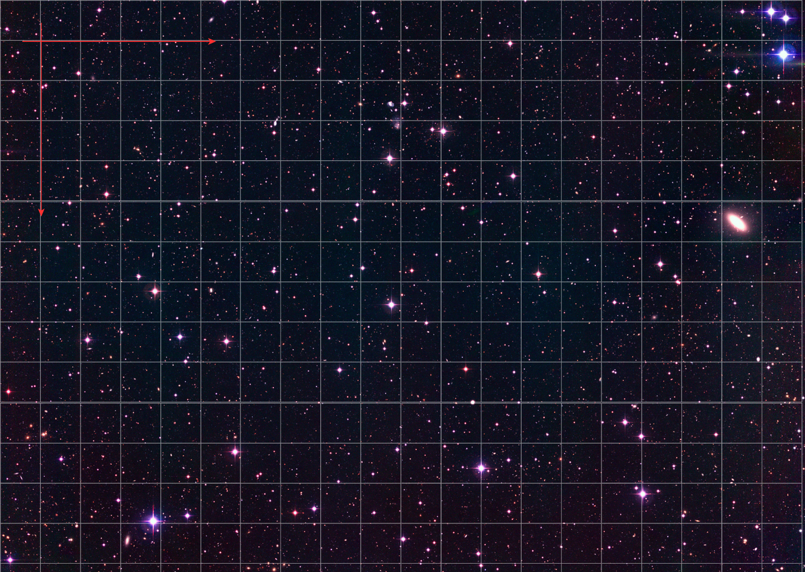

Registration closes in minutes!
HOLA


Objeto a Encontrar

Very Large Telescope
La Silla
Coordenadas
Hace años que sabemos de la existencia teórica de exoplanetas (aquellos fuera de nuestro sistema solar), pero ¿serás capáz de capturar la imágen de uno?